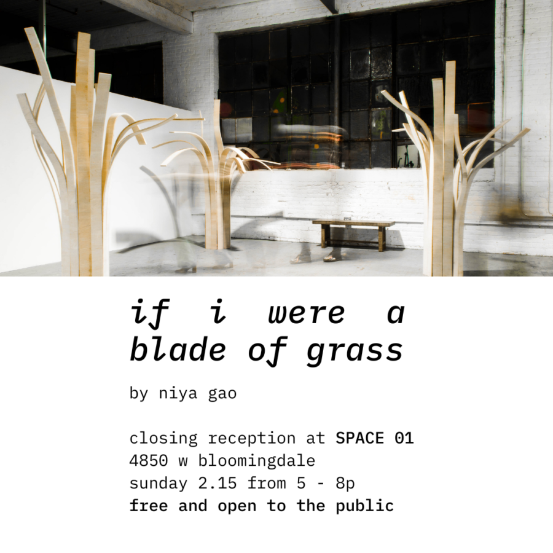

if i were a blade of grass by Niya Gao – Closing Reception
come in to view niya gao’s transient body of sculptures at SPACE 01 before they leave! her book ‘The Grass Between Words’ is available in the form of hardcover, softcover, and digital copies. please reach out to purchase! closing reception 02.15.2026 from 5-8p
4850 w bloomingdale free admission ‘if i were a blade of grass’ is a remote collaboration between SPACE 01 operator trejon d’angelo and interdisciplinary artist niya gao, a chinese canadian sculptor and installation artist currently living and working in china. the exhibition presents a selection of sculptures and sketches created by niya between 2022–2024, curated and installed by trejon at SPACE 01. view niya’s work here: https://www.instagram.com/niyagao_ngart/?hl=en